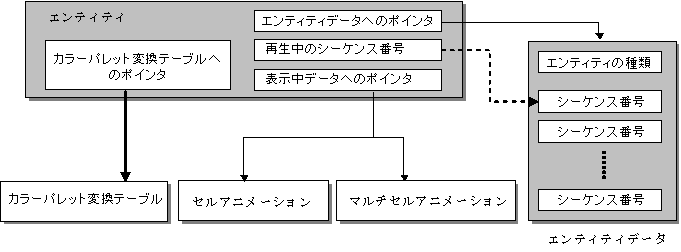

エンティティ概要
概念図

説明
エンティティはセルアニメーション、マルチセルアニメーションといったデータ構造より上位レイヤ（ユーザプログラム）よりの情報を管理、格納する概念として定義されました。
G2D内部で定義されるデータ構造としては最上位レイヤに位置するものです。したがって、将来のバージョンにおいて、上位レイヤ（ユーザプログラム）よりの機能拡張がなされる場合はこのレイヤに対する変更が行われることが予想されます。
Entityの内部データ
Entityは、下記の情報を持ちます。
エンティティデータへのポインタ
ここには、メインメモリ上に読み出した エンティティデータ（.nenrファイル）へのポインタが格納されます。エンティティデータは静的なデータであり、書き換えられることは有りません。
再生中のシーケンス番号
ここには、現在再生中であるアニメーションシーケンスの番号が格納されます。アニメーションシーケンスの番号は、エンティティデータへのポインタが指し示すエンティティデータ中のアニメーションシーケンス番号に対応します。
表示データへのポインタ
ここには、現在描画中のセルアニメーションまたはマルチセルアニメーションへのポインタが格納されます。
カラーパレット変換テーブルへのポインタ
キャラクタには同じ物を使用し、そのキャラクタが使用するカラーパレットを変更することにより異なるキャラクタを表現する場合を想定し、カラーパレットを変換する為のテーブルを持っています。カラーパレットの変換テーブルには、16個のカラーパレットを、それぞれ何番のカラーパレットに変えるかを指定します。
参照
なし
履歴
2004/12/06 初版